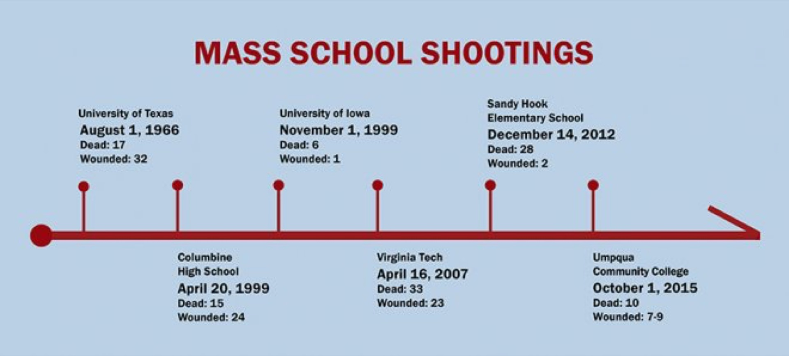

The morning after the 1966 UT Tower shooting — what is known today as one of the worst mass shootings in modern U.S. history — The Austin American’s front-page headline read, “Everyone Loved Him.”
The article went on to describe Charles Whitman as “a good son, a top Boy Scout, an excellent Marine, an honor student, a hard worker, a loving husband, a fine Scoutmaster, a handsome man, a wonderful friend to all who knew him — and an excellent sniper.”
For weeks, news coverage focused on how a seemingly good man could commit mass murder and if his tumor was really to blame.
After some time passed, however, talk of Whitman and the shooting died down. The University shut down for a single day, and flags flew at half mast for one week. For the next 33 years, the University was silent.
In an online research project, “Behind the Tower: New Histories of the UT Tower Shooting,” Maria Hammack, a Ph.D. student in history, explored the “collective amnesia” that followed early mass shootings across America.
“It’s a way of healing, or maybe, what I gather, a way to desensitize or detach ourselves from the pain,” Hammack said. “Nowadays, the idea is opposite — that in order for you to move on and heal, you have to talk about it. But back then the notion was very different.”
In the past 50 years, media treatment of subsequent shootings has evolved, prompting nationwide discussions of mental health and public policy after the attacks at Columbine in 1999 and Virginia Tech in 2007. Hammack said UT’s 50th anniversary memorial service on Monday is an indication of that shift.
“I think digging into these histories and sort of pulling out and unveiling the truth of what happened is going to help people, and the whole community, move on and heal,” Hammack said.
Many news organizations have also shifted their focus away from stories about the shooters in favor of those about the victims. To encourage this change, Texas State University launched the “Don’t Name Them” campaign. Pete Blair, the program’s executive director, said the campaign is based on the discovery of a direct contagion effect for active shooter events.
“If you know that they’re motivated by desire for notoriety or fame, then if you reduce the amount of notoriety or fame they get for that, it should reduce the frequency for which you see the events occur,” Blair said.
Matt Chittum, who covered many of the Virginia Tech victims’ stories for The Roanoke Times, said students’ cell phone footage of the shooting provided accurate accounts of what happened, but overshadowed the victims with graphic images and risked making a celebrity out of their killer.
“When you’re doing a crime story, you don’t want to let the victims get lost in there,” Chittum said. “Our main goal was to be as human as possible.”
One of the biggest changes, however, is the media’s growing experience in covering mass shootings. After Virginia Tech, Chittum said The Roanoke Times received a gift package of food from a newspaper in Oklahoma City who empathized with what their reporters were going through.
“Essentially we’ve repeated that — we just sent a package down to Orlando, and prior to that we sent one to WDBJ,” Chittum said. “It’s a really nice thing, but we don’t do it every time because it happens so often now. We’re getting too versed in how to cover these things.”